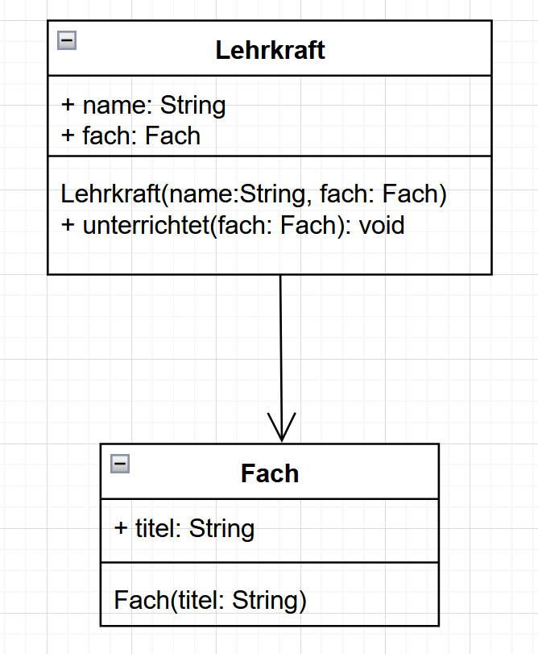
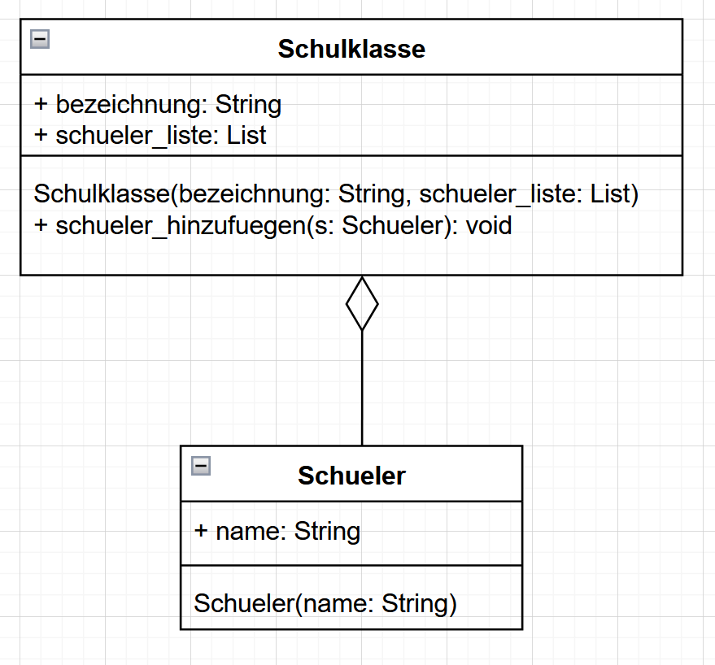
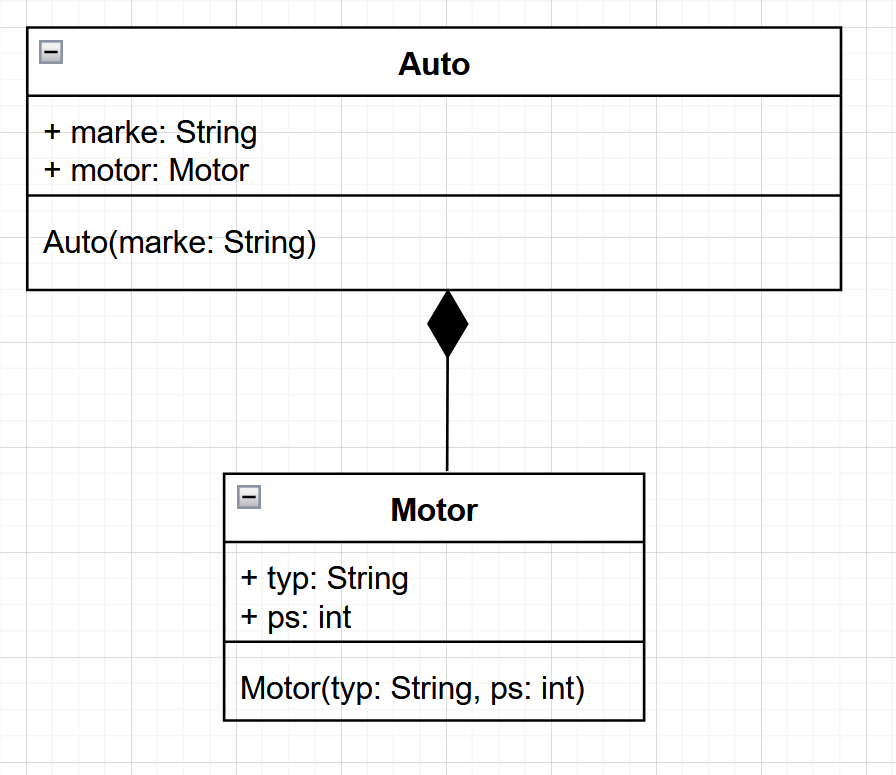

Überblick › LB 4/5 OOP und Softwareentwicklung
4.8 Beziehungen zwischen Klassen
In größeren Programmen arbeiten Objekte nicht allein – sie kennen einander, enthalten andere oder bestehen aus Teilen. Solche Beziehungen zwischen Klassen helfen dir, komplexe Systeme realitätsnah zu modellieren.
Schritt 1: Assoziation – „kennt“
Eine Assoziation bedeutet: Ein Objekt „kennt“ ein anderes, z. B. über ein Attribut. Beide Objekte können unabhängig voneinander existieren. Im Code ist „kennen“ nichts anderes als ein Attribut, in dem ein Verweis auf das andere Objekt steht. Achte im Video darauf, dass unterrichtet(ma) kein neues Fach erzeugt, sondern nur einen Pfeil setzt. Neu ist der Operator is, er wird kurz erklärt.
Zum Nachlesen steht das Beispiel aus dem Video mit allen Schritten und Testfällen in Beispiel 1:
Hinweis: Warum steht bei self.fach ein Typ direkt am Attribut?
Wenn ein Attribut zunächst leer ist (z. B. None), ist der Typ nicht automatisch klar. Mit self.fach: Fach | None = None erklärst du: „Hier soll später ein Objekt vom Typ Fach stehen – oder None, solange noch kein Fach zugewiesen wurde.“ Das hilft dir, der Entwicklungsumgebung und allen, die deinen Code lesen.
Hinweis: is oder ==?
a is b ist genau dann True, wenn a und b auf dasselbe Objekt zeigen – im Speicherbild: Beide Pfeile enden im selben Kasten. == vergleicht dagegen den Inhalt. Nach a = [1, 2], b = a und c = [1, 2] gilt a is b (dieselbe Liste), aber a is c ist False (zwei Listen mit gleichem Inhalt, a == c ist True).

Merkmale: lose Verbindung; beide Objekte können auch unabhängig voneinander bestehen.
Kurz geprüft 1: Verweis oder neues Objekt? AFB I
Nach kaya = Lehrer("Frau Kaya"), ph = Fach("Physik") und kaya.unterrichtet(ph): Was gibt print(kaya.fach.titel) aus? Wie viele Fach-Objekte gibt es jetzt? Und was passiert bei ph.lehrer?
Lösung zeigen
Ausgabe Physik. Es gibt genau ein Fach-Objekt: unterrichtet speichert nur einen Verweis, kaya.fach is ph ist True. ph.lehrer löst einen AttributeError aus – das Fach kennt die Lehrkraft nicht (gerichtete Assoziation).
Danach: Aufgabe 4.8.1 – Typen ergänzen: Ein Spieler kennt sein Level.
Weiter mit Schritt 2: Aggregation und Komposition →
Schritt 2: Aggregation und Komposition – wer lebt wie lange?
Bei Aggregation und Komposition hat ein Ganzes Teile. Der Unterschied liegt in der Lebensdauer der Teile: Bei der Aggregation werden sie außerhalb erzeugt und dem Ganzen übergeben, bei der Komposition erzeugt das Ganze sie selbst. Achte im Video darauf, wie viele Pfeile auf ein Teil zeigen – und was passiert, wenn das Ganze mit del verschwindet. del ist neu und wird kurz erklärt.
Zum Nachlesen: Aggregation – „hat, aber unabhängig“
Eine Aggregation bedeutet: Ein Objekt enthält andere Objekte, aber die enthaltenen Teile haben ein eigenes Leben. Sie werden meist außerhalb erzeugt und dem Ganzen übergeben.
class Schueler:
def __init__(self, name: str):
self.name: str = name
class Schulklasse:
def __init__(self, bezeichnung: str):
self.bezeichnung: str = bezeichnung
self.schueler_liste: list[Schueler] = []
def hinzufuegen(self, schueler: Schueler) -> None:
self.schueler_liste.append(schueler)
# Beispiel
s1 = Schueler("Lina")
s2 = Schueler("Jonas")
klasse = Schulklasse("10a")
klasse.hinzufuegen(s1)
klasse.hinzufuegen(s2)
Merkmale: Die Schulklasse enthält Schülerinnen und Schüler, aber diese existieren auch ohne die Klasse weiter (z. B. nach einem Klassenwechsel).
Zum Nachlesen: Komposition – „besteht aus, untrennbar“
Die Komposition beschreibt eine sehr starke Beziehung: Das enthaltene Objekt gehört fest zum Ganzen. Wird das Ganze zerstört, verschwindet auch das Teil. Den Code dazu findest du in Beispiel 2 bei Schritt 3.

Merkmale: Der Motor gehört fest zum Auto und wird direkt darin erzeugt. Ohne Auto kein Motorobjekt.
Hinweis: Was macht del genau?
del name löscht nur den Namen, nicht unbedingt das Objekt. Nach x = 5 und del x führt x zu einem NameError. Ein Objekt wird von Python erst freigegeben, wenn kein Verweis mehr darauf zeigt. Deshalb leben Lina und Jonas nach del klasse weiter (s1 und s2 zeigen noch auf sie), der Motor nach del auto1 aber nicht (nur das Auto zeigte auf ihn).
Kurz geprüft 2: Wer bleibt übrig? AFB I
Ein Haus erzeugt in seinem Konstruktor mit self.dach = Dach() sein Dach. Eine Garage bekommt mit garage.parken(a) ein vorhandenes Auto a. Welche Beziehung liegt jeweils vor? Gibt es das Dach nach del haus noch, und das Auto nach del garage?
Lösung zeigen
Haus – Dach ist eine Komposition: Nur das Haus zeigt auf das Dach, nach del haus ist es nicht mehr erreichbar und verschwindet. Garage – Auto ist eine Aggregation: a zeigt weiter auf das Auto, es bleibt nach del garage erhalten.
Danach: Aufgabe 4.8.2 – Kursverwaltung: Beziehungen bestimmen und programmieren.
Weiter mit Schritt 3: Vom Klassendiagramm zu Verweisen →
Schritt 3: Vom Klassendiagramm zu Verweisen
Pfeil, leere Raute, gefüllte Raute – im Code erkennst du die Beziehung an einer Frage: Wird ein vorhandenes Objekt übergeben, oder erzeugt das Ganze sein Teil selbst? Im Video siehst du eine typische Falle: eine „Komposition“, bei der der Motor von außen kommt. Achte im Speicherbild darauf, wie viele Pfeile auf den Motor zeigen.
Zum Nachlesen: Beispiel 2 zeigt die Komposition Auto – Motor und die Falle aus dem Video.
Kurz geprüft 3: Ein Motor oder zwei? AFB I
Was geben die beiden Programmstücke aus?
m = Motor("R3", 75)
c = Auto2("Fiat", m)
d = Auto2("Seat", m)
c.motor.typ = "R4"
print(d.motor.typ)
e = Auto("Fiat", "R3", 75)
f = Auto("Seat", "R3", 75)
e.motor.typ = "R4"
print(f.motor.typ)Lösung zeigen
Erst R4: c und d zeigen auf denselben Motor, die Änderung über c sieht man auch über d. Dann R3: Jedes Auto hat seinen eigenen Motor, die Änderung an e.motor betrifft f nicht.
Danach: Aufgabe 4.8.3 – Computer-Modell mit Assoziation und Komposition.
Zusammenfassung: Beziehungen im Vergleich
| Beziehung | Definition | Beispiel | Lebensdauer | Verbindung |
|---|---|---|---|---|
| Assoziation | Ein Objekt kennt ein anderes. | Lehrer kennt Fach | beide unabhängig | 🔹 locker |
| Aggregation | Ein Objekt enthält andere – diese leben aber eigenständig weiter. | Schulklasse enthält Schüler | Teil lebt auch ohne Ganzes | 🔸 mittel |
| Komposition | Ein Objekt besteht aus anderen – sie können nicht ohne es existieren. | Auto enthält Motor | Teil endet mit dem Ganzen | 🔴 stark |
Praxisbezug: Beziehungen modellieren
Alltag: Ein Online-Warenkorb ist eine Komposition aus Positionen (löschst du den Warenkorb, verschwinden seine Positionen), er verweist aber nur per Assoziation auf die Produkte – die bleiben im Shop erhalten.
Beruf: Die Entscheidung zwischen Aggregation und Komposition hat in echter Software Folgen: In Datenbanken entscheidet sie z. B., ob beim Löschen eines Kunden auch seine Bestellungen gelöscht werden („ON DELETE CASCADE“). Softwarearchitektinnen und -architekten legen das im UML-Modell fest, bevor programmiert wird.
Das Wichtigste
Beziehungen zwischen Klassen: Sie zeigen, wie stark zwei Objekte miteinander verbunden sind.
Assoziation („kennt“): Ein Objekt kennt ein anderes; beide existieren unabhängig voneinander.
Aggregation („hat“): Ein Ganzes enthält Teile, die auch ohne das Ganze existieren. UML: Linie mit leerer Raute am Ganzen.
Komposition („besteht aus“): Die Teile gehören fest zum Ganzen und existieren nicht ohne es. UML: Linie mit gefüllter Raute am Ganzen.
Grundaufgaben
Aufgabe 4.8.1: Typisierung korrigieren – „Spielcharaktere“ AFB I–II
In diesem Beispiel geht es um ein kleines Rollenspiel. Die Typen sind teilweise nicht angegeben oder unklar. Ergänze die Typen sinnvoll und überarbeite den Code so, dass deutlich wird, wie die Klassen miteinander in Beziehung stehen.
class Level:
def __init__(self, nummer):
self.nummer = nummer
class Spieler:
def __init__(self, benutzername):
self.name = benutzername
self.level = None
def wechsel_level(self, neues_level):
self.level = neues_level
return neues_level- Welchen Typ hat
nummerinLevel? - Was ist
neues_level? Muss man hier etwas erlauben oder einschränken? - Wie stellt man die mögliche Abwesenheit eines Levels korrekt typisiert dar?
- Gib auch der Methode
wechsel_level()einen passenden Rückgabetyp.
Aufgabe 4.8.2: Kursverwaltung AFB II–III
Erstelle die Klassen Lehrkraft, Kurs und Schueler.
- Bestimme den Beziehungstyp und stelle die Klassen und ihre Beziehungen in UML dar.
- Implementiere die Klassen in Python.
- Teste deine objektorientierte Umsetzung mit eigenen Beispielen.
Das kann ich jetzt
Grau steht, was der Lehrplan verlangt, darunter, was das für dieses Thema konkret heißt. Hake einen Punkt ab, wenn er in deinem Hefter zusammengefasst ist und du ihn ohne Hilfe kannst. Wie du ihn zusammenfasst, entscheidest du selbst. Die Haken speichert nur dein Browser.
Lehrplan LB 4 Aggregation und Assoziation (Kennen von Begriffen der objektorientierten Programmierung)